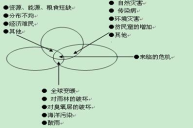

2006 年全国硕士研究生入学统一考试思想政治理论试题
一、单项选择题：1～16 题，每小题1 分，共16 分。下列每题给出的四个选项中，只有一个选项是符合题
目要求的。请在答题卡上将所选项的字母涂黑。
1.世界上惟一不变的是变。这一论断的含义是：
2.“只有音乐才能激起人的音乐感；对于没有音乐感的耳朵说来，最美的音乐也毫无意义”。这表明：
3.温家宝总理在给一位国务院参事的回信中，引用了两句诗：“知屋漏者在宇下，知政失者在草野。”这一古训蕴含的哲理是：
4.“许多事情我们可以讲一千个理由、一万个理由，但老百姓吃不上饭，就没有理由。‘民以食为天’”。这段话表明：
5.某资本家投资100 万元，资本有机构成4：1，m’＝100%，一年周转4 次，其年剩余价值量和年剩余价值率分别为：
6.商业资本作为一种独立的职能资本，也获得平均利润，其直接原因是：
7.现代企业制度的典型形式是：
8.“墙上芦苇，头重脚轻根底浅；山间竹笋，嘴尖皮厚腹中空。”毛泽东在延安整风运动期间用这幅对联形象地讽刺了：
9.中国新民主主义革命时期的统一战线包含着两个联盟。其中基本的、主要的联盟是：
10.1939 年毛泽东在《中国革命和中国共产党》中指出，中国是在许多帝国主义国家的统治或半统治之下，实际上处于长期的不统一状态，再加上土地广大，其结果是：
11.要实现我国经济发展的战略目标，必须加快经济增长方式的转变，其核心是正确处理好：
12.创新是一个民族进步的灵魂，是一个国家兴旺发达的不竭动力，也是一个政党永葆生机的源泉。创新包括理论创新、制度创新、技术创新、文化创新及其他各方面的创新。在各项创新中处于先导地位的是：
13.我国社会主义经济体制改革与政治体制改革的关系表现为：
14.《中共中央关于制定国民经济和社会发展的第十一个五年规划的建议》提出，“十一五”时期要做到资源利用效率显著提高，单位国内生产总值能源消耗比“十五”期末降低：
15.2005 年10 月27 日，十届全国人大常委会审议通过《关于修改<中华人民共和国个人所得税法>的决定》将个人所得税工薪费用扣除标准调整为：
16.2005 年5 月底6 月初，欧盟成员国法国和荷兰先后在全民公决中以多数票否决了《欧盟宪法条约》，这一事件说明：
二、多项选择题：17～33 小题，每小题2 分，共34 分。下列每题给出的四个选项中，至少有两个选项是
符合试题要求的。请在答题卡上将所选项的字母涂黑。多选、少选或错选均不得分。
17.人对物质世界的实践把握是在实践的运行过程中实现的，其基本环节有：
18.马克思指出：“一个社会即使探索到了本身运动的自然规律，……它还是既不能跳过也不能用法令取消自然的发展阶段。但是它能缩短和减轻分娩的痛苦。”这表明：
19.据报载，北京市××区开展以文化育文明的活动，通过文化资源孕育文明、群众文化哺育文明、文化兴区培育文明等三种途径，营造文明城区。这是因为：
20.深圳青年歌手丛飞在8 年时间内，捐资上百万元资助了很多贫困山区的失学儿童，而自己却身患癌症，负债17 万元。有人这样评价他：“丛飞能够从帮助别人的过程中得到快乐。”丛飞的行为表明：
21.在资本积累过程中，实现个别资本增大的形式是：
22.垄断资本主义的基本经济特征包括：
23.社会主义市场经济条件下按劳分配的特点有：
24.我国宏观经济调控政策有：
25.在土地革命战争后期和抗日战争时期，毛泽东思想得到系统总结和多方面展开而达到成熟。下列毛泽东的科学著作中，写于这个时期的有：
26.1948 年中国共产党制定了土地改革总路线。下列选项中对这一总路线所含内容理解正确的有：
27.中华人民共和国的成立标志着：
28.“三个代表”重要思想深化了对中国特色社会主义的认识，表现在：
29.“计划经济不等于社会主义，资本主义也有计划；市场经济不等于资本主义，社会主义也有市场”。邓小平这一论断的内涵是：
30.中国共产党领导的多党合作和政治协商制度，是我国的一项基本政治制度。多党合作的主要方式有：
31.农业、农村和农民问题始终是我国现代化建设的根本性问题，在现代化建设中必须依靠广大农民群众，因为：
32.2005 年9 月15 日，国家主席胡锦涛在联合国成立60 周年首脑会议上，发表了《努力建设持久和平、共同繁荣的和谐世界》的讲话，他提出：
33.主要在越南、泰国等东南亚国家发生的禽流感于2005 年10 月扩散到欧洲、中国、中东及美洲等地。一直被认为是传染病“拒入”地带的俄罗斯、乌克兰、克罗地亚、希腊、瑞典和英国等欧洲国家也相继出现禽流感疫情，世界各国都感到了危机。这一事件表明：
三、分析题:34～38 小题，每小题10 分，共50 分。要求结合所学知识分析材料回答问题。将答案写在答题
纸相应位置上。
34.从前，沧州城南有一座临河寺庙，庙前有两尊面对流水的石兽，据说是“镇水”用的。一年暴雨成灾，大庙山门倒塌，将那两尊石兽撞入河中。庙僧一时无计可施，待到10 年后募金重修山门，才感到那对石兽之不可或缺，于是派人下河寻找。按照他的想法，河水东流，石兽理应顺流东下，谁知一直向下游找了十里地，也不见其踪影。这时，一位在庙中讲学的先生提出其见解：石兽不是木头做的，而是由大石头制成，它们不会被流水冲走，石重沙轻，石兽必然于掉落之处朝下沉，你们往下游找，怎么找得到呢？旁人听来，此言有理。不料，一位守河堤的老兵插话：我看不见得，凡大石落入河中，水急石重而河床沙松者应求之于上游。众人一下子全愣住了：这可能吗？老兵解释道：“我等长年守护于此，深知河中情势，那石兽很重，而河沙又松，西来的河水冲不动石兽，反而把石兽下面的沙子冲走了，还冲成一个坑，时间一久，石兽势必向西倒去，掉进坑中。如此年复一年地倒，就好像石兽往河水上游翻跟头一样。”众人听后，无不服膺。寻找者依照他的指点，果真在河的上游发现并挖出了那两头石兽。请运用马克思主义哲学有关原理，结合材料回答问题：
(1)庙僧按照常理，认为石兽应顺流而下。从真理的具体性分析其失当之处。(4 分)
(2)守河堤老兵关于石兽“逆流而上”的见解对我们辩证地思考问题有何启示？并举一例说明之。(6 分)
35.自2002 年以来，南京、成都、石家庄等地相继发生奶农把鲜奶倒入下水道的事件。另据2004 年7月15 日中央电视台《经济半小时》报道，进入夏季之后，浙江某市160 多户奶农也频频把鲜奶倒入水沟，有时在一天内倒掉14 吨。倒奶那几天，畜牧兽医站的工作人员分头外出，帮助奶农联系收购鲜奶的企业，但收效甚微。时隔一年，这样的事件又见诸媒体。2005 年8 月11 日新华网报道，陕西某村十几家奶农无奈把鲜奶倒进污水沟。为帮助奶农售奶，当地政府联系了一家公司，收奶价格是每公斤1.2 元。可就是这样的低价，该企业后来也不收了。
人们不禁要问：如今牛奶多得喝不完了吗？其实，全球年人均奶类消费量为93 公斤，中国仅为7.2 公斤。奶农倒奶固然与牛奶易变质且不能大量贮存有关，但前几年一些地方农民一窝蜂地饲养奶牛，鲜奶的供应大量增加。同时，很多企业纷纷介入乳品加工业，有些产品尚未达标就上市，消费者不敢购买。当乳品销路不好时，企业便限量收购鲜奶。根据以上材料回答问题：
（1）历史上资本主义国家经济危机时农场主把牛奶倒入大海的现象，与材料中的“倒奶事件”有何本质区别？(3 分)
（2）“倒奶事件”中隐含着什么样的经济规律?(3 分)
（3）为避免发生类似的“倒奶事件”，你认为地方政府应如何作为?(4 分)
36.新中国成立前夕，朱德在全国工会工作会议上的讲话中指出：“私人资本主义企业中的职工，他们在经济上还没有获得完全解放，他们还受着资本家剥削，这种剥削在新民主主义时期只能够受到限制，而不能够消灭”；为了工人阶级根本的长远的利益，还必须“在现阶段自觉地忍受资本家之一定限度以内的剥削”。根据以上材料回答问题：
（1）新中国成立后,工人阶级成了国家的主人,为什么私人资本主义企业中的职工还要“忍受”资本家的剥削? (5 分)
（2）既然如此,为什么从1953 年开始又要对私人资本主义进行社会主义改造? (5 分)
37.建立健全与经济发展水平相适应的社会保障体系，是建成完善的社会主义市场经济体制的重要内容，
是贯彻以人为本为核心的科学发展观、构建社会主义和谐社会的必然要求。胡锦涛同志《在省部级主要领导干部提高构建社会主义和谐社会能力专题研讨班上的讲话》中指出：“我们所要建设的社会主义和谐社会，应该是民主法治、公平正义、诚信友爱、充满活力、安定有序、人与自然和谐相处的社会。”而要“切实维护和实现社会公平和正义”，其中一项重要内容就是“进一步完善社会保障体系，逐步扩大社会保障的覆盖面，切实保障各方面困难群众的基本生活，让他们感受到社会主义大家庭的温暖”。根据以上材料回答问题：
（1）从我国社会保障体系的主要内容说明，为何建立健全社会保障体系体现着科学发展观以人为本的本质和核心？(5 分)
（2）公平正义是社会主义和谐社会的重要特征。从社会保障的基本功能说明建立健全社会保障体系与实现公平正义之间的内在联系。(5 分)
38.本题为选做题，请在Ι、Ⅱ两道题中选取其中一道作答，若两题都回答，只按第Ι道试题的成绩记入总分。选做题Ι：
2005 年X 月X 日下午，XX 大学学生王文、李波、张彬在自习室相遇。王文：哎，你们注意没有，这两天，胡锦涛主席去北美访问，随行的居然有70 多家像海尔集团这样的企业“大腕”。上次加拿大总理访华，来了277 家企业，360 多人。领导人出访，带这么多企业代表干什么？李波：这有什么新鲜！当年克林顿一上台不就宣布在世界上推销美国产品是他的责任吗？韩国更绝，居然要求所有的外交官都要成为韩国商品的推销员。
张彬：所以啊，EADS①的老总跟德国总理施罗德访华，拿到了价值13 亿美元的合同，包括23 架空中客车，还有为北京奥运会提供的安保系统。
李波：施罗德有什么办法？国内经济不景气，他可以用这些订单来证明自己还是有海外营销能力的嘛。现在领导人出访可不能只谈友谊，经济合作程度是考查领导人出访成果的一个主要指标。
王文：难怪欧盟不顾美国反对，要取消对华武器禁运，看来也是出于经济利益的考虑。张彬：经济全球化时代竞争这么激烈，要保护本国利益，又不能损害别国利益，难啊。看来各国外交都得为经济“打工”。
李波：有位外交官不是说，50 年前，如果大使讲经济会被认为是笑柄，现在大使如果不懂经济更会成为笑柄。冷战期间，国与国的较量，军事力量起着重要的作用。现在靠什么？还不是靠经济与技术！王文：看来，世界真的变了！注①：指欧洲航空防务与航天公司根据以上材料回答问题：
（1）他们正在讨论国际社会发生的一种什么样的变化？(4 分)
（2）为什么“现在大使如果不懂经济更会成为笑柄”？(6 分)
选做题Ⅱ：
随着人口的急剧增长，人类社会面临着三种主要因素的制约，即经济增长，资源以及环境。人们将发现我们面临的是相互制约的三重困境（如下图）人类必须从这三重困境结构中寻找出路。

根据以上材料回答问题：
（1）运用普遍联系的观点说明人类发展所面临的三重困境。(4 分)
（2）分析人类发展走出三重困境的战略选择。(6 分)